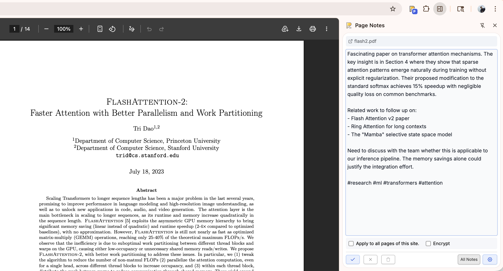
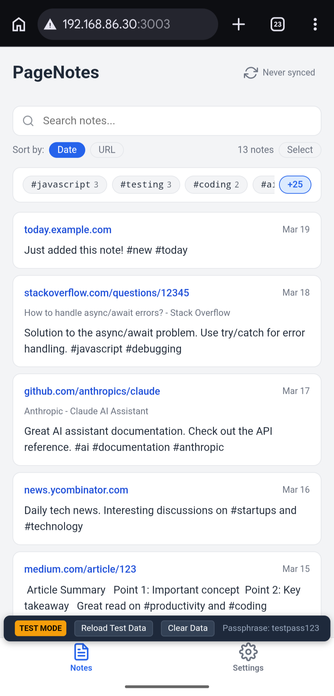

Side Panel Keyboard Shortcut
Press Alt+S to instantly toggle the side panel open and closed. No clicking required — your notes are one keystroke away.
Alt + S
A faster way to access your notes, improved sync reliability, and a refreshed web app experience.
Press Alt+S to instantly toggle the side panel open and closed. No clicking required — your notes are one keystroke away.
Open Page Notes in a persistent side panel that stays visible as you browse. Your notes are always within reach, right alongside the page.

The pagenotes.app web app now defaults to the new PWA experience with an improved desktop layout and tag cloud.

Notes now remember the page title, making them easier to identify in the All Notes view without having to open the URL.
Ignore query parameters, hashes, or other URL parts so your notes stick to the right page — especially useful for sites like Google Docs. YouTube URLs are also automatically normalized. Learn more.
Fixed sync issues for Chrome profiles synced across devices. Your notes now transfer reliably between computers.
Smoother popup behavior with hidden scrollbars in edit mode and no duplicate UIs when the extension popup is already open.